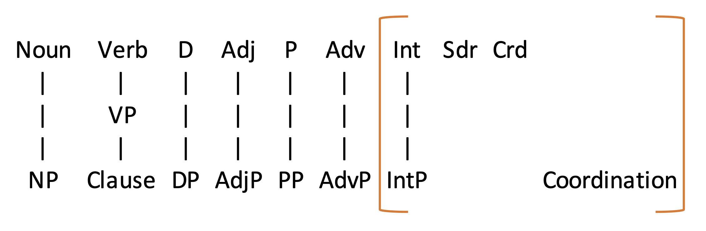

The full list of lexical and phrasal categories is shown below.

We've now looked at Noun, Verb, Determinative, Adjective, Preposition, Adverb and their phrasal projections.
We haven’t looked at Interjections, Subordinators, Coordinators, or Coordinations.